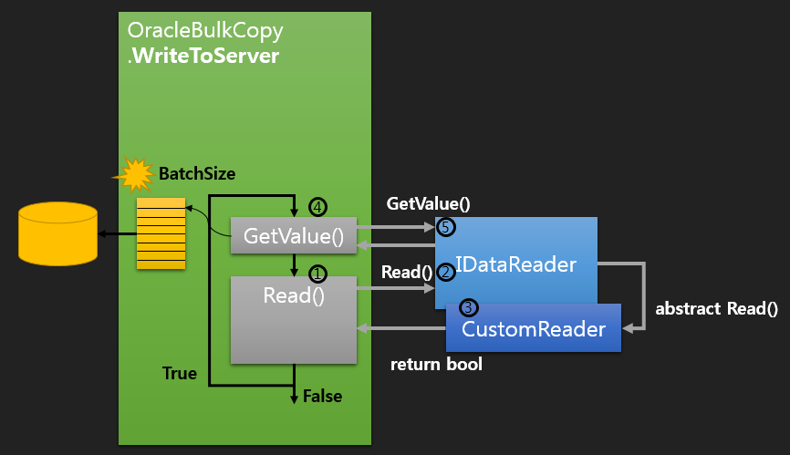
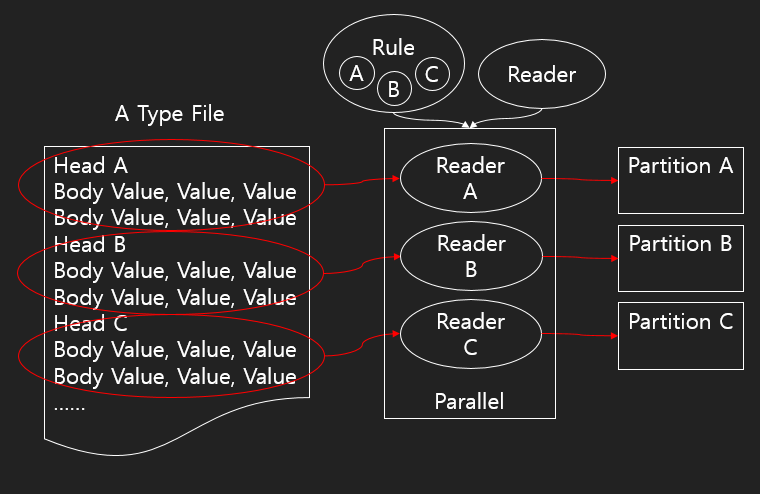

RDBMS Oracle 대용량 데이터 파싱
1. Data Type
2. Oracle Load, ODP.NET API
3. Memory Limit
4. Implementation
5. Change Strategy
6. 그밖의 Tips
400 values, 3KB * 5,000rows = 15MB
300MB, 500Byte * 16,000,000rows = 7.45GB
Conventional path load vs. Direct path load
| Lock | DML | Transaction | |
|---|---|---|---|
| Conventional | Row | O | O |
| Direct | Talbe | X | X |
Direct path load DML Hint
INSERT /** append_values */ INTO DATA_TABLE
Oracle.DataAccess.Client.OracleBulkCopy
using (Oracle.DataAccess.Client.OracleBulkCopy bulkcopy = new Oracle.DataAccess.Client.OracleBulkCopy(GetConnection()))
{
bulkcopy.BulkCopyTimeout = 0;
bulkcopy.DestinationTableName = TableName;
//bulkcopy.DestinationPartitionName = PartitionName;
bulkcopy.WriteToServer(table);
//bulkcopy.WriteToServer(reader);
}
Memory Limits for Windows.
call "$(DevEnvDir)..\Tools\vsvars32.bat"
editbin /largeaddressaware "$(TargetPath)"
Reference link.
<runtime>
<gcAllowVeryLargeObjects enabled="true"/>
</runtime>
DataTable vs. DataReader
IDataReader 구현의 장점
Implement IDataReader
public abstract class CustomReader<T> : IDataReader {
public StreamReader FileReader { get; set; }
public T LineData { get; set; }
private PropertyInfo[] _propertis = null;
public abstract bool Read();
public object GetValue(int i) {
return GetPropertyValue(i);
}
private object GetPropertyValue(int i) {
return _propertis[i].GetValue(LineData, null);
}
}
Inheritance CustomReader
public class ADataReader : CustomReader<A> {
public override bool Read() {
var result = !FileReader.EndOfStream;
if (result) {
// parsing
string[] arrLine = FileReader.ReadLine().Split(' ');
this.LineData = new A() { Value1 = arrLine[0], Value2 = arrLine[1] };
}
// **return 값이 false가 아니면
// LineData는 항상 할당이 되어야한다.
// LineData가 null일때 return값이 true면
// base에서 호출되는 GetValue 함수에서 오류가 발생한다.
return result;
}
}
OracleBulkCopy.BatchSize
using (Oracle.DataAccess.Client.OracleBulkCopy bulkcopy = new Oracle.DataAccess.Client.OracleBulkCopy(GetConnection()))
{
bulkcopy.BulkCopyTimeout = 0;
bulkcopy.DestinationTableName = TableName;
bulkcopy.BatchSize = 3,000,000;
bulkcopy.BulkCopyOptions = OracleBulkCopyOptions.UseInternalTransaction;
bulkcopy.WriteToServer(reader);
}
WriteToServer Operation
Next Strategy
Implement
public class Rule {
public bool IsMatchedRule { get; private set; }
public string RuleValue { get; set; }
public bool RuleCheck(string line)
{
IsMatchedRule = line.StartsWith(RuleValue);
return IsMatchedRule;
}
}
public class ADataReader : CustomReader<A> {
public Rule ParsingRule { get; set; }
public override bool Read()
{
var result = !FileReader.EndOfStream;
if (result)
{
string[] arrLine = null;
string strLine = string.Empty;
while (!ParsingRule.IsMatchedRule)
{
strLine = FileReader.ReadLine();
ParsingRule.RuleCheck(strLine);
}
// parsing
arrLine = strLine.Split(' ');
this.LineData = new A() { Head = arrLine[0], Value1 = arrLine[1], Value2 = arrLine[2] };
}
return result;
}
}
class Program {
static void Main(string[] args)
{
List<Rule> lstRules = new List<Rule>();
lstRules.Add(new Rule() { RuleValue = "A" });
lstRules.Add(new Rule() { RuleValue = "B" });
lstRules.Add(new Rule() { RuleValue = "C" });
Parallel.ForEach(lstRules, rule =>
{
using (FileStream fs = new FileStream("A_Type_File.txt", FileMode.Open, FileAccess.Read, FileShare.Read))
{
StreamReader sr = new StreamReader(fs);
ADataReader a = new ADataReader() { FileReader = sr, ParsingRule = rule };
}
});
}
}
AAA0000(O)
ZZZZZ99(O)
BBB00AA(X)
Expresstion ^[A-Z]{3}([A-Z]{1}[\d]{1}|[A-Z]{2}|[\d]{2})[\d]{2}
>>>>>>> origin/gh-pages
public interface IChangeableValue<in R> {
void SetValue(R val);
}
public interface IChangeableValue<in R, out A> {
A SetValue(R val);
}
public interface ICreateShape<out A> {
A CreateShape();
void CreateShape(Action<R> callback);
}
System.Threading
Reference